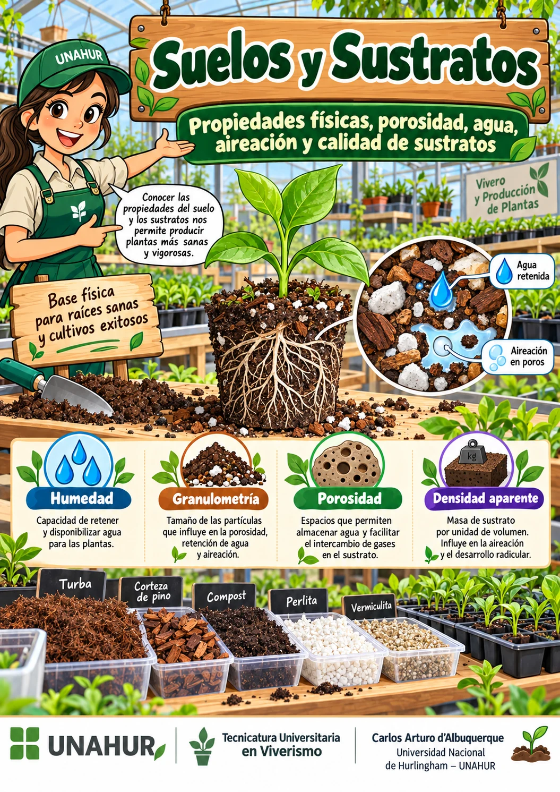

UNAHUR · VIVERISMO · GUÍA DE ESTUDIO 10
Agua, aire y raíces en equilibrioSUELOS Y SUSTRATOSPropiedades
de los sustratos.
Explorá cómo el tamaño de partículas, los poros y el contenedor influyen en el agua, el aire y las raíces. Un recorrido para comprender, calcular y practicar.

ANTES DE EMPEZAR
El sustrato es un sistema de sólidos, agua y aire.
La calidad física depende de su equilibrio y de cómo cambia durante el cultivo. El mismo material puede comportarse de manera distinta en recipientes de diferente altura.
Índice de estudio elaborado a partir de las láminas 001–031, respetando su orden. Las imágenes originales están completas. Los cálculos distinguen bases de masa y volumen y no prescriben una mezcla ni un programa de riego.
01 / TU RECORRIDO DE ESTUDIO
Del 01 al 31, siguiendo las láminas.
Elegí una ficha o avanzá paso a paso. Podés marcar las que ya repasaste.
02 / ENCONTRÁ LAS DIFERENCIAS
Una mirada, muchas pistas.
Buscá conceptos, especies y temas sin perder el orden del índice.
| Tema del índice | Idea o ejemplo | Para recordar | Grupo | Descripción |
|---|
Buscá propiedades, materiales y conceptos sin perder el orden de las 31 láminas.
LABORATORIO INTERACTIVO
De los datos a la interpretación.
Humedad y densidad
Masas netas de muestra, sin recipiente. Volumen total medido antes del secado.
Base húmeda = (Mh − Ms) / Mh × 100. Base seca = (Mh − Ms) / Ms × 100. Dap = Ms / V.Reparto del volumen
Todos los porcentajes se refieren al volumen total de la muestra.
Aire = EPT − agua. Sólidos = 100 − EPT. No se calcula disponibilidad de agua a partir de estos porcentajes.Altura del contenedor: ejemplo 09
03 / HACÉ MEMORIA
Leé la pregunta.
Recordá la idea.
Una tarjeta por tema, en el orden del índice. Intentá responder antes de darla vuelta.
04 / DESAFÍO DEL JARDÍN
Cuarenta y una preguntas para conectar ideas.
Treinta y una preguntas siguen el recorrido y diez integran fórmulas y conceptos. Aprendé con cada explicación.
TU MATERIAL DE CONSULTA
Treinta y dos láminas para explorar.
Portada y 31 láminas originales en orden numérico. Tocá para ampliar cada imagen completa.
PRECISIONES PARA ESTUDIAR
Las bases y las unidades importan.
- Humedad: la fórmula de la lámina 14 es en base húmeda. Base seca utiliza masa seca como denominador; humedad volumétrica requiere volumen de agua y volumen total. La estimación con la mano no sustituye una medición.
- Altura del recipiente: para un material dado, las fracciones medias de aire y agua cambian con el perfil en altura. Un porcentaje menor de agua no implica siempre menos mL totales. Purdue: propiedades de sustratos.
- Porosidad no es aireación: EPT incluye poros con agua y aire. Los porcentajes deben compartir denominador. El umbral de 85% y el rango de densidad 400–600 kg/m³ de las imágenes no son objetivos universales. Purdue: poros de un sustrato.
- Tablas y dibujos: se conservan como material original, no como mediciones del sustrato del lector. El 88% atribuido a arena gruesa en la lámina 30 requiere verificar la fuente. Los gráficos 22 y 31 no se digitalizan como datos experimentales.
- Potencial matricial: una mayor succión significa mayor magnitud de retención y potencial matricial más negativo. Las clases de poros dependen del criterio de clasificación.
- Detalle de la lámina 12: el rótulo que indica un fondo más seco contradice el perfil representado en otras láminas: la base suele quedar más húmeda después del drenaje.
Ilustraciones: Carlos Arturo d’Albuquerque · UNAHUR · Tecnicatura Universitaria en Viverismo. Recorrido basado en las 31 láminas proporcionadas.